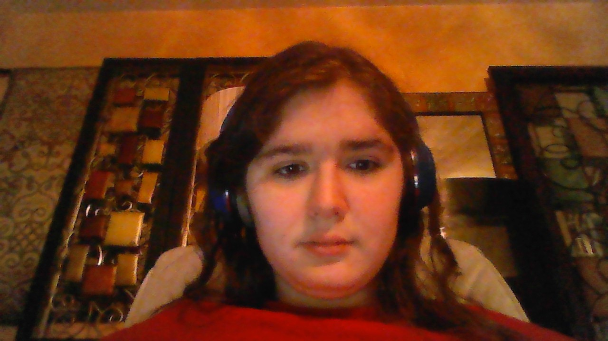

Hello! I am Anna Hoerschgen! Born in Springfield, Missouri, I'm an 18, almost 19, year old female with interests the world over. I've completed, or are near to completing, classes in mostly graphic design and programming. I enjoy drawing and so most of my thinking occurs visually, and sometimes viewing my process can seem like things are being done backwards or I'm ping-ponging between aspects due to how my brain works. While I mostly draw, I also sometimes dabble in animation, coding, writing, and other forms of content creation. My unique creative upbringing made me a yin-yang of programming and art: within every piece of art, there is (at least a basic) understanding of code, and within every statement written in what I code, a little bit of artistry shines through.
| View my work! | ||
|---|---|---|
| Passion Projects | Graphics Projects | Programming Projects |
I am Anna Hoerschgen, and I have always been interested in drawing. In the last few years, I have gotten into programming with Scratch to make animations with my artwork. What I like to draw has always been impacted by whatever I am currently into. These hyperfixations rise and fall like mental dynasties that come from anywhere and everywhere. They switch out like this because I am neurodivergent. I have autism and ADHD, and I have overcome many problems caused by these differences. I start and abandon projects every so often because I am so busy creating new stuff that I forget to develop on the things I have already started. In the past, this has been mostly because I did not have the means or skill to complete them. Going to OTC will help me acquire these skills to finish what I want to do; whether that be programming or improving my drawing skills, so that I can live comfortably. Most of my known life has been forgettable, and only occasionally do I get to put a solid anchor in time due to current events in my life going on making things not that easy. I know that going to OTC will prepare me for the future and equip me to make it through the easy and difficult times. I am looking forward to my future classes and the skills I will learn from them. The campus and class size at OTC is perfect for me, because it is not big enough to feel daunting to traverse and the classes are not big enough to feel like during the lectures it could suddenly get too loud. I feel at home at OTC, and it makes me feel confident about my future. Thank you for considering me for this scholarship; receiving it will help me get one step closer to my future goals.